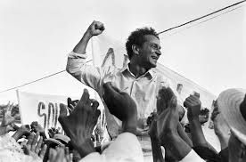
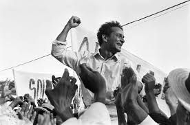

Tenda dos Milagres
Contexlização Tenda dos Milagres é um livro do autor brasileiro Jorge Amado publicado em 1969.
A obra conta a história de Pedro Archanjo, um escritor baiano que valoriza a miscigenação e combate o preconceito racial .
A narrativa de Tenda dos Milagres se dá em dois tempos, entrelaçados ao longo da história. O tempo presente,
aquele em que o autor escreveu o romance, idos de 1969, relata a chegada de um estrangeiro ao Brasil, cujo propósito era conhecer a terra de Pedro Archanjo .
Jorge Amado (1912-2001) foi um escritor brasileiro nascido na cidade baiana de Itabuna. Ele fez faculdade de Direito no Rio de Janeiro, mas não exerceu a profissão de advogado.
Durante alguns anos, viveu no exterior por questões políticas. Ele é um dos maiores representantes da ficção regionalista que marcou o Segundo Tempo Modernista. Sua obra é baseada na exposição e análise realista dos cenários rurais e urbanos da Bahia.
Jorge Amado faz parte da Geração de 30 do Modernismo brasileiro. Assim, o romance em questão apresenta realismo social e crítica sociopolítica .
A obra traz reflexões sobre questões sociais e políticas do século XX e denuncia o preconceito racial e as injustiças sociais, além de enaltecer a liberdade de expressão .
 
